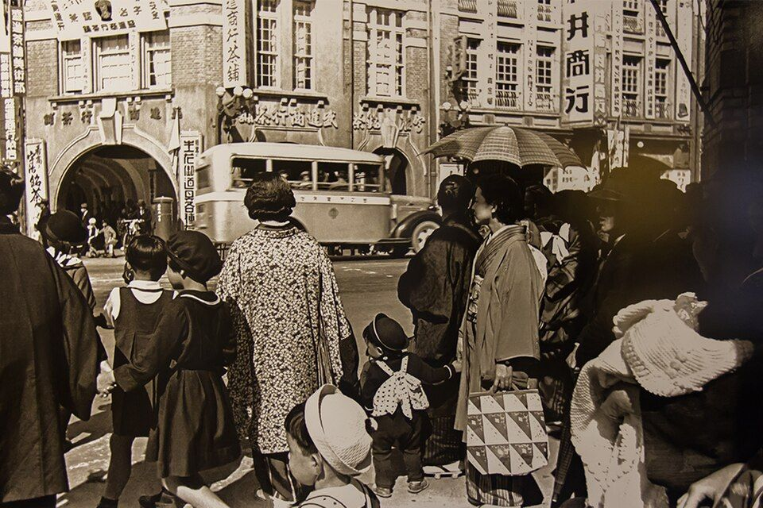
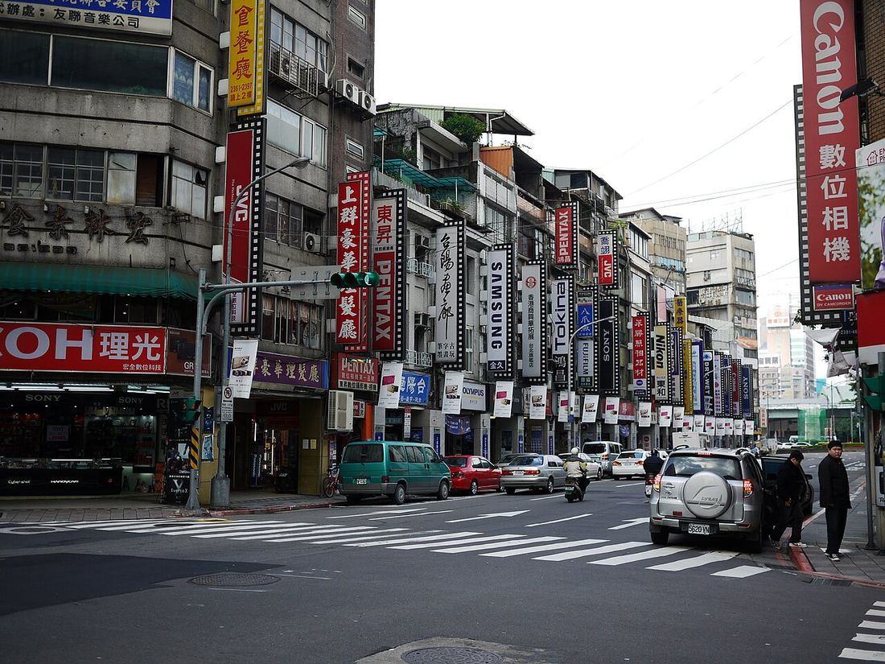
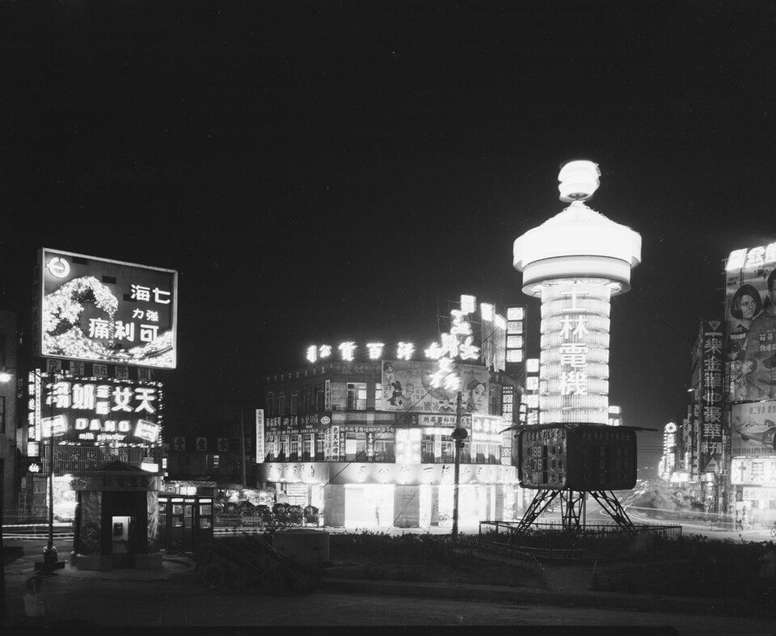
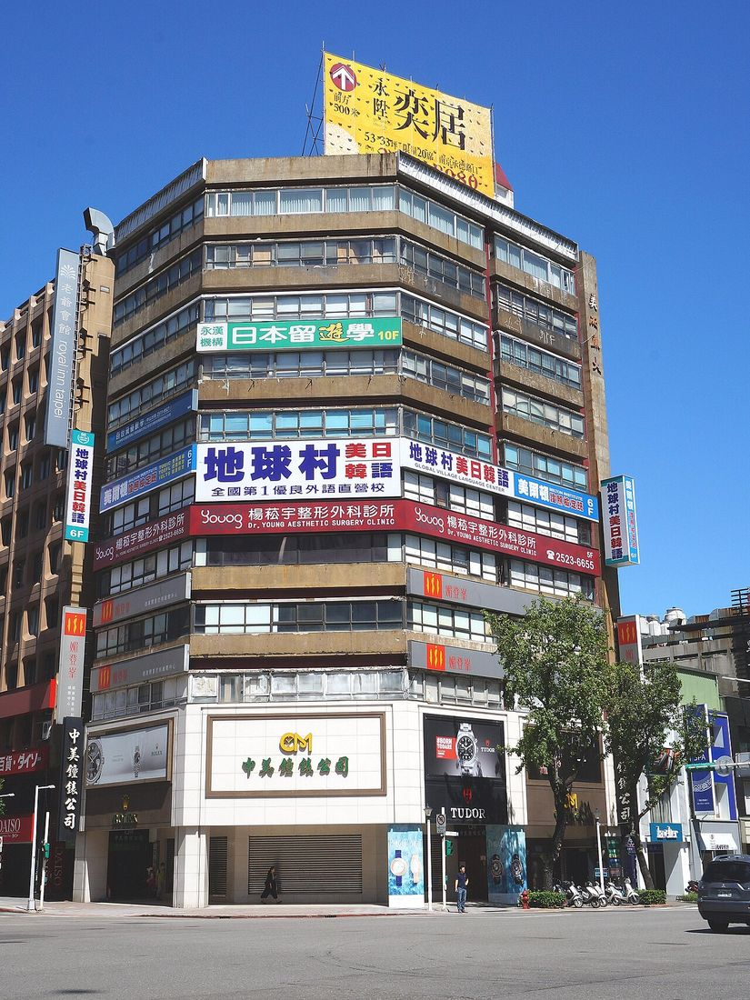

台北老店．大稻埕與城中
美而廉
一九五〇年代的台北，有一家西餐廳，樓上是攝影界的大本營。

它叫美而廉，在博愛路，賣西餐、咖啡、西點和麵包。
老闆愛攝影
老闆陳雁賓熱愛攝影，把餐廳樓上借給攝影同好辦展。一九五三年，中國攝影學會在台復會，就在這裡成立；隔年，台北市攝影會也在這裡成立，陳雁賓後來當上會長。
一場火，一座藝廊
一九五六年，附近許昌街大火，火星飛來，燒毀了餐廳二、三樓。隔年一月新樓落成，四樓變成藝廊。郎靜山、鄧南光、張才都在這裡展出過。
現代攝影從這裡開始
一九六五年，鄭桑溪和張照堂在美而廉辦「現代攝影展」，詩人洛夫寫文章稱讚。一九六〇年代後期老闆移民加拿大，後來餐廳結束營業。
專業點：咖啡配甜點
・兩種思路：呼應，或互補
・呼應：濃縮咖啡的堅果香 × 七成黑巧克力
・互補：咖啡的苦 × 甜點的甜，互相平衡
老照片與街景



店家資訊
- 店家
- 美而廉原址
- 地點
- 台北市中正區博愛路114號（已歇業）
- 現況
- 已歇業，可看原址
- 營業時間
- 常有變動，出發前請再確認
- IG 影片
- 1/19 上片
如果你家附近也有一家這樣的店，你最想在樓上看什麼展？
到 IG 留言告訴我們
到 IG 留言告訴我們